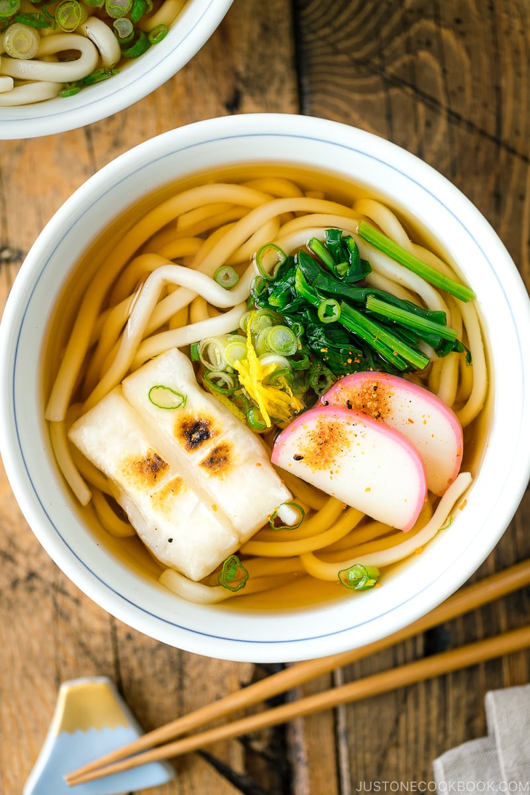

Udon Noodle Soup with Toasted Mochi (Chikara Udon) 力うどん

Description
This simple Udon Noodle Soup with Toasted Mochi hits the spot any time of the day! The chewy mochi is unbeatable, but you can easily customize the rest of the toppings. To make it a vegan version, simply use kombu and shiitake dashi for your soup broth.
Ingredients
For the Udon Broth (with concentrated mentsuyu):
560 ml water
80 ml mentsuyu/tsuyu (concentrated noodle soup base)
1 Tbsp mirin
For the Udon Noodle Soup:
2 pieces kirimochi or homemade mochi
4 slices kamaboko (fish cake) (optional; skip for vegan/vegetarian)
1 green onion/scallion
50 g spinach (optional; you can use other vegetables)
2 servings udon noodles (6.3 oz/180 g dry udon noodles; 1.1 lb/500 g frozen or parboiled udon noodles)
yuzu zest (optional; for the color and aroma)
shichimi togarashi (Japanese seven spice) (for a spicy kick)
For the Udon Broth from Scratch (without Mentsuyu; optional):
600 ml dashi (Japanese soup stock; click to learn more) (I'll show you how to make a quick dashi using a dashi packet in this recipe; you can purchase it here); if you're vegan/vegetarian, make my Kombu Dashi or a combination of kombu dashi and Shiitake Dashi
1½ Tbsp soy sauce
1 Tbsp mirin
1 tsp sugar
⅛ tsp kosher or sea salt (I use Diamond Crystal; use half for table salt)
Steps
To Prepare the Udon Broth (with concentrated mentsuyu)
Using a toaster oven, standard oven, frying pan, or stovetop Japanese fish grill (I purchased this from a Japanese market). Toast both sides of the mochi until they are browned and puffed up. Set them aside.
Meanwhile, prepare the toppings. Cut the kamaboko (fish cake) into 4 thin slices.
Cut the green onion into thin rounds. Set aside. I also defrosted some yuzu zest (optional; here's how I freeze yuzu peels).
When the water is boiling, blanch the spinach with stem side down into the water first, for 30-45 seconds.
Remove the spinach from the pot (and shock it in iced water to stop the cooking and bring out the bright color—but this step is optional). Squeeze the water out and cut the spinach into 2-inch (5 cm) pieces. Set aside.
To Cook the Udon Noodles
In the same pot of boiling water, cook the udon noodles according to the package instructions. For frozen udon noodles, cook for 1 minute. Drain the udon noodles completely.
To Serve
Transfer the udon noodles to individual bowls and pour udon broth to completely cover the noodles.
Top the noodles with the toasted mochi, blanched spinach, chopped green onions, and yuzu zest (optional).
To Store
You can keep the toppings and udon broth in separate airtight containers and store them in the refrigerator for 3 days. However, I highly recommend cooking the udon noodles and toasting the mochi right before you serve.
To Make the Udon Broth from Scratch (without Mentsuyu)
In a medium saucepan, add the water and a dashi packet. Bring it to a boil over medium heat. If you want to make dashi from scratch, follow this tutorial (very easy). If you're vegan/vegetarian, make my Kombu Dashi or a combination of kombu dashi and Shiitake Dashi.
Simmer for 2-3 minutes. Then squeeze the liquid from the dashi packet and discard the packet.
Add the soy sauce, mirin, sugar, and salt and mix it all together. Cover with a lid (don't let the soup evaporate) and remove it from the heat. Set aside. The udon broth is ready to use.